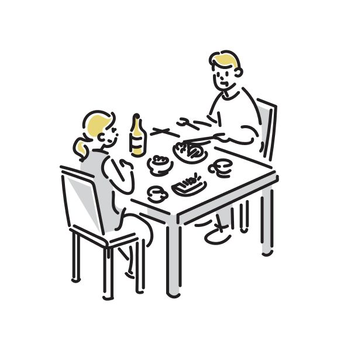
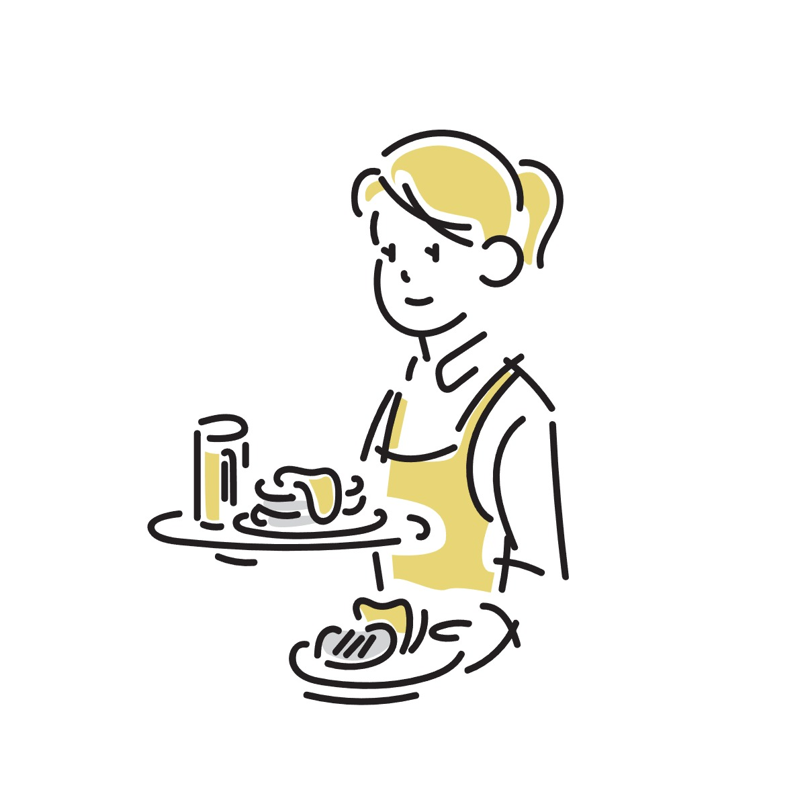

お客さまの声

「すごくおいしかったです!!♥」
【きっかけ】
ばあちゃんに誘われて来ました。
【スタッフの対応】
笑顔での対応が大変よかったです。料理の並ぶスピードが速いのも助かりました。
特に「えのき南蛮」と「里芋のチーズ焼き」が絶品でした！

「sizenのファンだからです。
すべてがパーフェクトでした！」
【sizenへの想い】
しばらく来ないと禁断症状が出てしまうほど大好きです。
【プロの仕事に感動】
料理の味やタイミングはもちろん、食材に向き合うシェフの真剣なまなざしやスタッフの気さくな笑顔。すべてに魂がこもっていました。
「パンの販売」を熱望しています！帰り道に買いたいファンがたくさんいるはずです♥
「野菜もおいしく、
体の中から元気になれそうです。」
【季節の恵みと家族の時間】
夏の来店から季節が変わり、久しぶりに家族揃って伺いました。いつも気持ちよく過ごせる、私たちの大切な場所です。
【初めてのチョウザメに感動】
チョウザメや鮭のカマなど、驚きのあるお料理ばかり。特に「いつものスープ」の安心する美味しさには癒されます。
#心身のデトックス #家族のお気に入り #旬を味わう